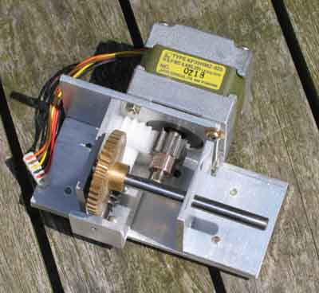
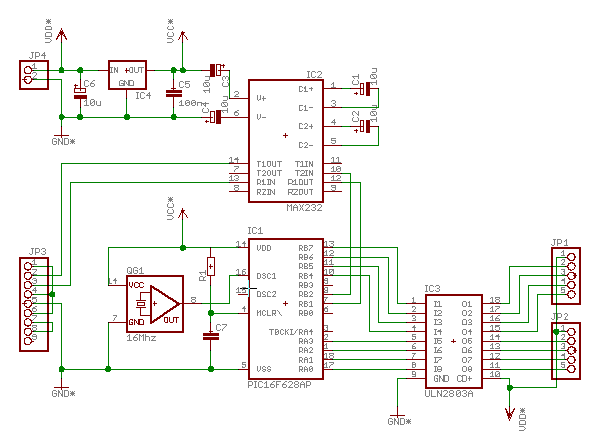
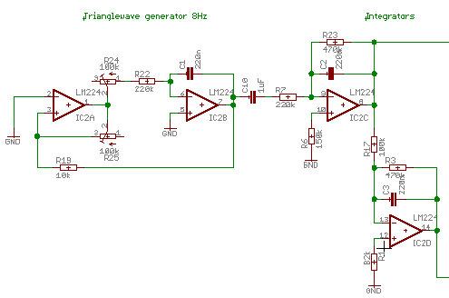
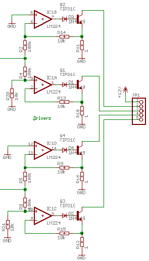

Building a stepper drive
This page discusses driving a telescope using stepper motors from 5.25" floppy drives (can you still finde these?).
Mechanics
Unipolar stepper motors can easily be retrieved from old 5.25"
floppy drives (together with a lot of other useful components: see the
"Floppy Tester" page). Because the speed has to be slowed down to
siderial or even lower, the effective torque will increase
proportionally. Therefore it is perfectly possible to drive relatively
large scopes with such small motors.

When properly driven, stepping rates of a few steps per second are
possible, although these rates are in the danger zone with respect to
resonance effects. The floppy motors do 200 full steps per second, and
the revolution rate can then be as low as 10 rpm. For tracking in an
equatorial mount this has to be converted to 1 revolution per siderial
day (approximately 23h 56m), which is a ratio in the order of 14360:1.
This ratio has to be realized mechanically, for exmple with a gear
train.
When the steppers are driven binary, i.e. with square waves, the best
you can do is half steps, or 400 per revolution. The resolution of a
half step must be lower than de resolving power of the scope, say 0.25
arcsecond. This means that resolutionwise, each half step (0.9°) must
be reduced to 0.25". This would require a reduction ratio of 12960:1,
again to be realized mechanically.
As an example, my RFT scope has an equatorial fork mount riding on a
polar disk of 230mm diameter, which is driven by an axle of 5mm
diameter. This axle is the output of a geartrain of 12:20 and a 1:40
worm. In total the reduction is just over 3000, requiring a stepper
revolution rate of approximately 2rpm.
Driving the stepper motor
In general a stepper drive citcuit splits up in two parts: the
control logic and the current driver. The drive logic generates the
signal patterns that will activate the windings of the stepper motor,
and hence control the stepping rate and direction. The current driver
converts these signals into a current through the motor windings, where
the torque is proportional to the current.
See "Jones on Stepping motors" for an extensive treaty on controlling steppers.

Below three modes are described: discrete steps (half or full), analog control, microstepping.
Full or half stepping
The nice thing about the unipolar stepper is that the drive circuit can be relatively simple. Given a stepping rate well away from the resonance frequency, some discrete logic combined with a 2803 octal darlington driving chip will do. Disadvantages are a jerky step behaviour, resulting in all kinds of vibrations, and relatively high minimum stepping rate (50 halfsteps per sec or so). Many examples of such simple driver circuits can be found on the web.
Sine/cosine drive
Microstepping
Practical examples
PIC 16F628 and ULN2803
Note that this circuit has not been built or tested
The circuit consists of only three ICs, a ULN2803 that drives the steppers, a MAX232 for interfacing to the PC, and a PIC 16F628 microcontroller. This PIC type has built in USART circuits, that make implementation of an RS232 interface a breeze. All that is needed is to connect a RS232 line driver to the USART I/O pins of the PIC, being port B bits 1 and 2. For driving the darlington array both I/O ports are used: port A(0..3) and port B(4..7). Vdd (12V) leads directly to the stepper driver, the stepper itself and also to an LM78L05 voltage regulator, which makes the Vcc. Last two items are the crystal oscillator, and the reset circuit R1/C7.
The PC interface is intended to work on 9600 baud, which should be
plenty fast for the few controls that pass through it. These controls
should facilitate setting the current coordinates and time, retrieving
the current coordinates (and time?), slewing and possibly also some
calibration of the tracking speed.
Part of the intelligence, such as conversions of coordinates to steps
and v.v., taking acceleration into account when moving between
coordinates and such, is contained in the PIC firmware itself.
Calculation of the angles and user interface is contained by a PC
program, or possibly a program in a PDA.
An analog sin-cos driver
|  | The circuit to the left consists of a low frequency triangle
wave generator and two integrators. The first integration of a triangle
wave yields a sinewave, and integration of a sine yields a cosine. The
generator is quite hard to tune, and probably not too stable. |
This is the circuit that converts the signal into the current
through the motorwindings. The OpAmps will regulate the voltage over
the 1Ω emitter resistors, according to the input signal. Per motor half
the signal is inverted for one of the windings, which together with
diodes and transistors implicitly functions as a rectifier. The
non-inverting branch produces the current for the positive half period,
and the inverting branch for the negative half. |
 |
A digital sin-cos driver
The analog quadrature oscillator appers to be extremely hard to get
stable, variable in frequency and amplitude, and to produce sine waves
at the same time. Therefore the next plan is to make a digital
oscillator with a PIC 18F452 and a pair of MAX534 DACs. Since the motor
only consumes 150mA, and the driving voltage is fairly smooth, the need
for real power transistors is relaxed. A set of darlingtons (bc517) are
used instead.

This design is currently being built and tested, results can be found here. The schematics and PCB layout can be downloaded from the Resources page.